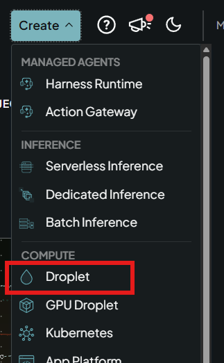
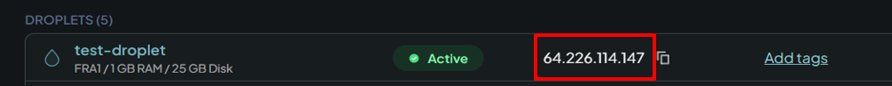
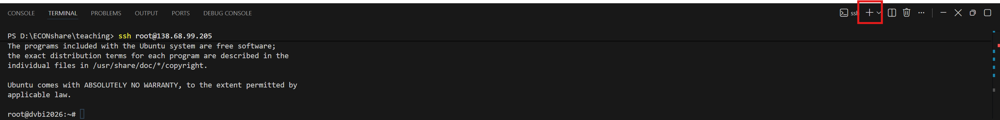
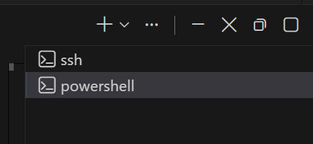

SSH setup guide
This guide helps you to create a Droplet on Digital Ocean, and create an SSH connection from Positron to the Droplet.
Before you start
- Terminal commands are to be run from the terminal in Positron.
Table of Contents
1. Create a droplet on DigitalOcean
Create a user on digitalocean.com.
Click “Create” at the top of the page and choose “Droplet” (marked in red below).

The Create menu on DigitalOcean with Droplet marked Choose the following settings:
- Region: Frankfurt
- Version: Ubuntu 22.04 (LTS) x64
- Droplet type: Basic
- CPU options: Regular, $12/mo (2 GB / 1 CPU, 25 GB SSD disk). You can scale up later if needed.
- Authentication: Password (create a strong password). We will add the SSH key later.
2. Finish setup of the droplet
- Hostname: Give your droplet a name in the field “Give your droplet a name”.
- Create the droplet.
- After the droplet has initialized, you can access it.
Good to know:
- Choose “Insights” to see the resources used by the droplet. The bottleneck will most likely be the memory (RAM).
- If you need more resources: “Settings” → “Resize”. Larger droplets cost extra, and you cannot decrease the droplet size again.
- Click the “Web console” button to access the command line of your Linux virtual machine (VM) directly in the browser (but we will instead connect with SSH using Positron).
- To destroy (delete) the droplet: “Settings” → scroll to the bottom to find the “Destroy” button.
3. What is SSH?
SSH (Secure Shell) is a safe way to run shell commands on another machine, e.g. a DigitalOcean droplet. The commands you type on your computer are sent to the droplet, where they run, and the output is sent back to your computer. Everything in both directions travels through one encrypted connection.
SSH keys come in pairs:
| Key | Where it lives | Share it? |
|---|---|---|
Public key (id_ed25519_dvbi.pub) |
Placed on the droplet | Yes, it is safe to share |
Private key (id_ed25519_dvbi) |
Stays on your computer | Never share it |
When you connect, your private key proves who you are to the droplet, which checks it against the public key it holds. The private key itself never leaves your computer.
4. Create an SSH key pair
If you do not have a .ssh folder in your home folder, create it first (you can use the commands below in your Positron terminal).
Windows (PowerShell):
New-Item -ItemType Directory -Force "$HOME\.ssh"macOS:
mkdir -p ~/.sshCreate the key pair (Windows and macOS):
ssh-keygen -t ed25519 -f "$HOME/.ssh/id_ed25519_dvbi"Press Enter twice to skip the passphrase (not needed in this course).
The key pair is now in your .ssh folder:
| Windows | macOS | |
|---|---|---|
| Folder | C:\Users\<username>\.ssh\ |
/Users/<username>/.ssh/ (also written ~/.ssh/) |
| Private key | id_ed25519_dvbi |
id_ed25519_dvbi |
| Public key | id_ed25519_dvbi.pub |
id_ed25519_dvbi.pub |
5. Log in to the droplet using the password
You find the IP address of your droplet on the “Droplets” page on DigitalOcean (marked in red below).

Replace <DROPLET_IP> with the IP address of your droplet, including the < and >, here and in the rest of this guide. Example: ssh root@<DROPLET_IP> becomes ssh root@64.226.114.147. Run:
ssh root@<DROPLET_IP>- If you are asked whether to trust the server, answer
yes. - Type the password of your droplet. The password is hidden while you type, so you will not see any characters. Just type it and press Enter.
You are now logged in: the terminal shows the prompt root@<DROPLET_NAME>:~# (e.g. root@dvbi2026:~#), and the commands you type now run on the droplet, not on your local computer.
6. Copy the public SSH key to the droplet
Open a new local terminal by clicking the small “+” in the terminal panel in Positron (marked in red below). The next command copies your public key from your laptop to the droplet, so it must run on your laptop, not in the droplet terminal from step 5.

You now have two terminals open in Positron. They are listed on the right side of the terminal panel (see below), and you switch between them by clicking them. The “ssh” terminal runs commands on your droplet, and the “powershell” terminal (called “zsh” on macOS) runs commands on your laptop.

In the local terminal, run this command to copy your public key to the droplet:
cat "$HOME/.ssh/id_ed25519_dvbi.pub" | ssh root@<DROPLET_IP> "mkdir -p ~/.ssh && chmod 700 ~/.ssh && cat >> ~/.ssh/authorized_keys && chmod 600 ~/.ssh/authorized_keys"Enter the droplet password when asked.
[!NOTE] What the command does. It reads your public key on your laptop, sends it to the droplet, and adds it to the file
~/.ssh/authorized_keys. This is the file where the SSH server on the droplet looks for the public keys that are allowed to log in.Click to see the command explained step by step
Part What it does $HOMEYour home folder on your laptop, e.g. C:\Users\<username>on Windows or/Users/<username>on macOScat "$HOME/.ssh/id_ed25519_dvbi.pub"Prints the content of your public key file \|The pipe: sends the output of the command on the left as input to the command on the right ssh root@<DROPLET_IP> "..."Logs in to the droplet and runs the commands in quotes there. Everything in the quotes runs on the droplet (Linux), also if your laptop runs Windows &&Runs the next command only if the previous one succeeded mkdir -p ~/.sshCreates the .sshfolder in your home folder on the droplet (~is your home folder, which is/rootwhen you log in asroot).-pmeans: no error if the folder already existschmod 700 ~/.sshSets the permissions of the folder, so only you (the owner) can read, write and open it. The three digits are the permissions for the owner, the group and everyone else: 7 = all permissions, 0 = none cat >> ~/.ssh/authorized_keyscattakes the key it receives from your laptop, and>>adds it to the end ofauthorized_keys. The file is created if it does not exist, and keys already in it are keptchmod 600 ~/.ssh/authorized_keysOnly you can read and write the file (6 = read and write) The permissions matter: SSH refuses to use the keys if other users can change the folder or the file.
7. Provide the public key to DigitalOcean
Show your public key in the terminal:
cat "$HOME/.ssh/id_ed25519_dvbi.pub"Copy the whole line it prints (it starts with ssh-ed25519). You can also open the file id_ed25519_dvbi.pub in a text editor and copy the text from there.
On DigitalOcean, go to “Settings” → “Security” → “Add SSH Key”:
- Paste the key into the “SSH key content” textbox.
- Give the SSH key a name, e.g. “For DVBI course”.
This registers the public key with DigitalOcean, so it can also be used for other droplets you create.
8. Set up the SSH config file
Go to your .ssh folder on your laptop and check if you have a file called config (no file extension). If not, create it.
Windows (PowerShell):
New-Item -ItemType File "$HOME\.ssh\config"macOS:
touch ~/.ssh/configOpen the config file in Positron (File → Open File…) and add the following at the end of the file. Remember to replace <DROPLET_IP> with your droplet’s IP address.
Host dvbi
HostName <DROPLET_IP>
User root
IdentityFile ~/.ssh/id_ed25519_dvbi
IdentitiesOnly yesThis tells SSH which private key to use for this host (where the host in this case is your droplet), so you can connect with the short name dvbi.
Test the connection from the terminal. You should now be logged in without being asked for a password:
ssh dvbiType exit to leave the droplet again.
9. Connect to the droplet from Positron
- Open the Command Palette in Positron:
Ctrl+Shift+P(Windows) orCmd+Shift+P(macOS). - Type
Remote-SSH: Connect to Hostand choosedvbi.
10. Troubleshooting
The command fails after copying it from the slides. PowerPoint changes straight quotes " into curly quotes “ ”, which the terminal does not understand. Copy the commands from this page instead.
Permission denied (publickey) when running ssh dvbi. Check that step 6 ran without errors, and that the IdentityFile line in your config file points to ~/.ssh/id_ed25519_dvbi (the private key, without .pub).
ssh dvbi says Could not resolve hostname dvbi. SSH cannot find your config file. On Windows, check that the file is called config and not config.txt: Notepad adds .txt automatically. In File Explorer, turn on “View” → “Show” → “File name extensions” to see the full file name.
WARNING: REMOTE HOST IDENTIFICATION HAS CHANGED! This happens if you destroy a droplet and create a new one that gets the same IP address. Remove the old entry from your laptop and connect again:
ssh-keygen -R <DROPLET_IP>